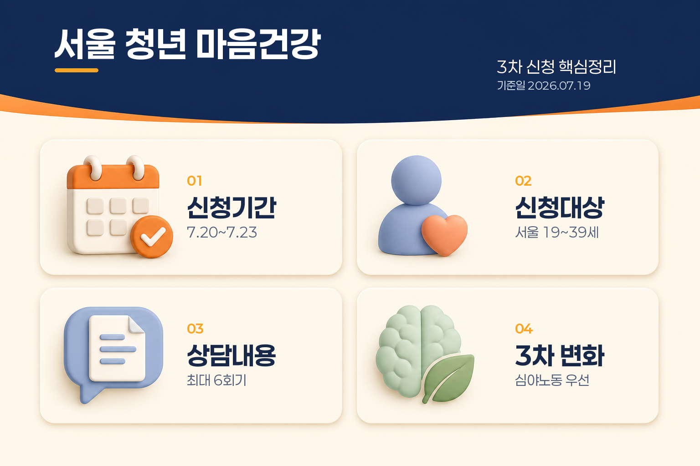
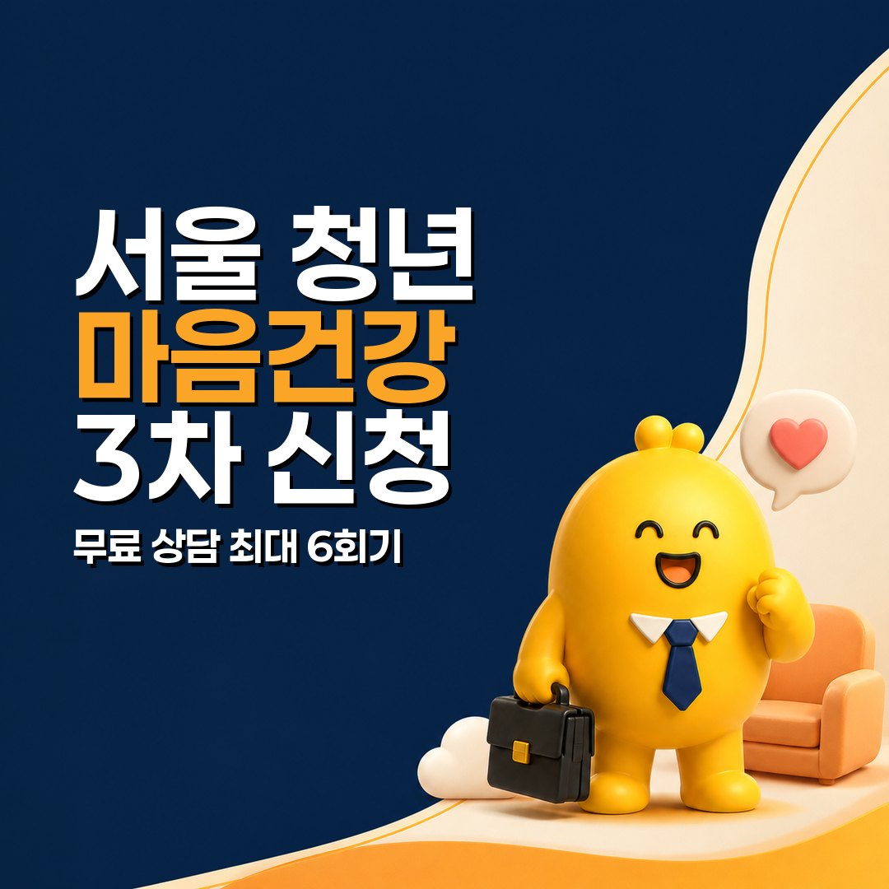

서울 청년 마음건강 3차 신청, 무료 심리상담 최대 6회기·신청방법 총정리
서울 청년 마음건강 지원사업 3차 신청은 2026년 7월 20일 오전 10시부터 7월 23일 오후 5시까지입니다. 서울에 거주하는 만 19~39세 청년 2,500명 내외를 대상으로 하며, 청년몽땅정보통에서 온라인으로 신청할 수 있습니다.
선정되면 간이정신진단검사(KSCL95)와 기질·성격검사(TCI)를 거쳐 1:1 자기이해 상담을 최대 6회기 받을 수 있습니다. 제출서류는 없지만, 선정 후 검사와 사전설문을 완료해야 상담 배정으로 넘어갑니다. 이번 3차부터는 심야노동청년 우선선발도 새로 적용됩니다.
기준일: 2026년 7월 19일
3차 신청 일정과 지원내용 한눈에 보기
| 항목 | 내용 |
|---|---|
| 신청기간 | 2026.07.20 10:00 ~ 07.23 17:00 |
| 모집인원 | 2,500명 내외 |
| 결과발표 | 2026.07.24 17:00, 청년몽땅정보통 마이페이지 |
| 상담 진행 | 2026.08.10 ~ 10.11 기준 |
| 대상 | 만 19~39세 서울 거주 청년 |
| 상담 | 1:1 자기이해 상담 최대 6회기 |
| 비용 | 무료 |
| 신청방법 | 청년몽땅정보통 온라인 신청 |
| 제출서류 | 없음 |

이번 모집은 신청기간이 짧습니다. 7월 20일 오전 10시에 접수창이 열리고, 7월 23일 오후 5시에 마감됩니다. 예산 소진이나 모집 상황에 따라 조기 마감 또는 일정 변경이 있을 수 있으므로 신청 전 최신 공고를 다시 확인하는 것이 좋습니다.
신청대상은 누구인가요?
신청일 기준 주민등록상 서울시에 거주하고 연령 조건을 충족하는 청년이면 신청할 수 있습니다. 일반 청년의 연령은 다음과 같습니다.
| 구분 | 출생연도·연령 기준 |
|---|---|
| 일반 청년 | 만 19~39세, 1986~2007년생 |
| 의무복무 제대군인 | 복무기간에 따라 최대 3년 연장 |
| 1년 미만 복무 | 만 40세, 1985년생까지 |
| 1년 이상~2년 미만 복무 | 만 41세, 1984년생까지 |
| 2년 이상 복무 | 만 42세, 1983년생까지 |
제대군인은 복무기간에 따라 연령 상한이 달라지므로 일반 연령만 보고 제외하지 않는 것이 좋습니다. 공고문상 신청서류는 없고, 신청 단계에서 자격확인과 기본정보를 입력합니다.
다만 다음에 해당하면 3차 참여가 제한됩니다.
- 신청일 기준 주민등록상 서울시 거주자가 아닌 경우
- 지원대상 연령에 해당하지 않는 경우
- 대한민국 주민등록번호를 보유하지 않은 경우
- 2026년 서울시 청년 마음건강 지원사업에 이미 참여한 경우
- 국가·공공기관의 상담 지원사업에 이미 참여 중인 경우
예를 들어 올해 1차나 2차에 참여했다면 3차에 다시 참여할 수 없습니다. 보건복지부 전국민 마음투자 지원사업 등 다른 공공 상담지원사업과의 중복도 제한될 수 있으므로 신청 전에 현재 참여 중인 사업을 확인해야 합니다.
3차부터 달라진 심야노동청년 우선선발
이번 3차의 가장 큰 변화는 심야노동청년 우선선발이 새로 도입된 점입니다. 서울시 안내 기준 심야노동청년은 다음 조건에 해당하는 경우입니다.
- 오후 10시부터 다음 날 오전 6시 사이에 근로
- 월평균 4회 또는 32시간 이상 근로
- 주 1회 고정 야간 아르바이트나 교대근무자도 포함
우선선발은 심야근무 조건에 해당하면 무조건 선정된다는 뜻은 아닙니다. 3차 모집에서 우선적으로 고려되는 대상이라는 의미이므로, 신청자격과 모집인원, 공고문에 따른 선정절차를 함께 확인해야 합니다.
무료 상담은 어떤 순서로 진행되나요?
서울 청년 마음건강 지원은 신청 즉시 상담사가 배정되는 방식이 아닙니다. 공식 공고문 기준으로 다음 단계를 거칩니다.
1단계. 신청과 자격확인
청년몽땅정보통에서 신청자격을 확인한 뒤 생년월일·연락처 등 기본정보와 세부사항, 약관 동의를 입력합니다. 대리신청은 불가능합니다.
신청 경로는 청년몽땅정보통 화면 상단의 금융·복지 → 건강지원 → 서울시 청년 마음건강 지원입니다. 신청기간에만 신청하기 버튼이 열립니다.
2단계. 심리검사
선정되면 청년 마음건강 플랫폼에서 KSCL95에 필수 응답하고, 이후 신청서에 입력한 연락처로 TCI 참여 안내를 받습니다. TCI 안내는 카카오톡이나 이메일로 올 수 있습니다.
KSCL95는 주요 임상심리적 문제 증상을 폭넓게 살펴보는 검사이고, TCI는 기질과 성격을 파악하는 검사입니다. 두 검사는 상담을 위한 자료로 활용되며, 이 사업의 검사가 의료기관의 진단이나 치료를 대신하는 것은 아닙니다.
특히 KSCL95를 완료하지 않으면 별도 통보 없이 사업 참여가 취소될 수 있습니다. 선정 후 안내가 오면 검사부터 먼저 완료해야 합니다.
3단계. 결과분석과 사전설문
검사기간이 끝나면 약 1~5일 동안 결과를 분석하고 1차 유형을 분류합니다. 이후 상담 안내문에 동의하고 사전설문을 작성해야 상담사 배정이 가능합니다.
안내 기간 안에 상담 안내문 동의와 사전설문을 완료하지 않으면 별도 통보 없이 참여가 자동 취소될 수 있습니다.
4단계. 상담파트너 배정
전문 심리상담사인 청년상담파트너가 배정된 뒤 상담 장소와 일정을 조율합니다. 신청할 때 입력한 상담 희망 자치구와 시간대를 최대한 반영하지만, 희망 조건이 항상 그대로 반영되는 것은 아닙니다.
배정된 지역이나 상담 방식 때문에 효과적인 상담 진행이 어렵다면 예외적으로 재배정을 지원할 수 있습니다. 전년도 참여자는 같은 상담사로 지정 배정되지 않습니다.
5단계. 1:1 자기이해 상담
상담은 최대 6회기 진행됩니다. 상담 중 진단적 면담과 심리검사 결과에 대한 해석상담이 진행될 수 있으며, 상담 기간은 상담 배정일부터 2026년 10월 11일까지입니다.
매주 1회, 고정된 시간에 진행하는 것이 원칙입니다. 다만 상담파트너와 미리 협의하면 시간 변경이 가능할 수 있습니다.
6단계. 맞춤형 사후관리
상담 종료 후에는 최종 유형군에 따라 집단상담, 마음특강, 멘토링, 힐링체험, 정원처방 등 맞춤 프로그램이 제공될 수 있습니다. 2026년 사업은 상담을 자기이해에서 끝내지 않고 진로·취업·문화·정원 프로그램 등 다른 정책과 연결하는 구조를 강화했습니다.
다만 모든 참여자에게 같은 프로그램이 자동 제공되는 것은 아닙니다. 검사와 상담 결과, 유형군, 프로그램 운영 상황에 따라 이용 가능한 후속 지원이 달라질 수 있습니다.
상담 일정에서 특히 조심할 규칙
무료 상담인 만큼 예약을 가볍게 생각하면 참여가 중단될 수 있습니다.
| 상황 | 공고문 기준 처리 |
|---|---|
| 상담 일정 24시간 이하를 남기고 취소 | 당일 취소로 처리 |
| 상담시간보다 20분 초과 지각 | 당일 취소로 처리 |
| 당일 취소 1회 | 상담 회기 1회 차감 |
| 당일 취소 2회 | 상담 자동 종결, 당해연도 재참여 불가 |
| 상담파트너 배정 후 7일 초과 무응답 | 사업 참여 자동 취소 |
재난·재해나 병원 진료처럼 불가피한 사유는 증빙자료가 있으면 참작될 수 있습니다. 일정 변경이 필요할 때는 무단 불참보다 가능한 한 빨리 상담파트너나 담당기관에 연락하고, 증빙이 필요한지 확인하는 것이 안전합니다.
상담 내용은 어디까지 비밀로 보장되나요?
사업에서 진행한 상담 내용은 상담사와의 비밀로 보장되는 것이 원칙입니다. 다만 자살·자해 위험이 있거나 본인 또는 타인의 안전에 심각한 위협이 되는 경우, 감염성 치명적 질병·아동학대·법적 공개 요구 등은 비밀보장 원칙의 예외가 될 수 있습니다.
공고문은 이런 경우에도 최소한의 정보만 관련 기관과 담당자에게 전달하고, 참여자에게 정보 공개 사실을 알린다고 안내합니다.
신청 전 체크리스트
- 신청기간을 7월 20일 10시~7월 23일 17시로 확인했나요?
- 신청일 기준 주민등록상 서울 거주자인가요?
- 일반 청년은 1986~2007년생 범위에 해당하나요?
- 제대군인이라면 복무기간에 따른 연령 연장 대상인지 확인했나요?
- 2026년 1·2차 청년 마음건강 사업에 이미 참여하지 않았나요?
- 전국민 마음투자 지원사업 등 공공 상담지원사업과 중복되지 않나요?
- 선정 후 KSCL95와 TCI 검사를 완료할 수 있나요?
- 상담 안내문 동의와 사전설문을 기간 안에 제출할 수 있나요?
- 매주 상담 일정에 참여하고 24시간 이하 취소를 피할 수 있나요?
자주 묻는 질문
진단서나 소득서류를 제출해야 하나요?
3차 모집 공고문에는 제출서류가 없다고 안내되어 있습니다. 신청 단계에서 자격확인과 기본정보를 입력하는 방식이며, 별도 진단서나 소득자료 제출이 요구되는 사업은 아닙니다. 다만 신청 화면의 최신 입력 항목은 접수 시 확인하세요.
올해 1차나 2차에 신청만 하고 선정되지 않았다면 3차 신청이 가능한가요?
공고문은 ‘2026년 서울시 청년 마음건강 지원사업 기 참여자’를 제한하고 있습니다. 단순 신청 이력인지, 선정 후 일부 절차를 진행한 참여자인지 해석이 필요한 상황이라면 청년몽땅정보통 공고문이나 다산콜센터 02-120에서 본인 이력을 확인하는 것이 안전합니다.
3차 이후 4차 모집도 있나요?
2026년 사업은 연간 4회 모집 계획으로 안내됐지만, 3차 공고문에는 4차의 구체적인 접수일이 제시되지 않았습니다. 3차를 놓쳤다면 청년몽땅정보통 공지사항에서 다음 모집 공고가 게시됐는지 확인해야 합니다.
상담으로 정신과 치료를 대신할 수 있나요?
이 사업은 심리검사와 자기이해 상담, 맞춤형 사후관리 프로그램을 제공하는 정책입니다. 공고문도 정신증이나 자살위기처럼 의료 진료와 추가 사례관리가 필요한 경우 외부기관으로 연계하거나 안내할 수 있다고 설명합니다. 긴급한 자해·자살 위험이 있다면 모집 결과를 기다리지 말고 109 자살예방상담전화, 112 또는 119에 즉시 도움을 요청하세요.
마무리
서울 청년 마음건강 3차 신청은 7월 20일 오전 10시부터 7월 23일 오후 5시까지입니다. 핵심은 다음과 같습니다.
- 만 19~39세 서울 거주 청년이 신청할 수 있고 제대군인은 복무기간에 따라 연령이 연장됩니다.
- 3차부터 심야노동청년 우선선발이 도입됐습니다.
- 선정 후 KSCL95·TCI 검사와 사전설문을 완료해야 상담이 배정됩니다.
- 1:1 자기이해 상담은 최대 6회기이며, 상담 종료 후 맞춤형 사후관리가 이어질 수 있습니다.
- 당일 취소·20분 초과 지각·7일 초과 무응답은 참여 취소나 재참여 제한으로 이어질 수 있습니다.
신청 전에는 청년몽땅정보통에서 최신 공고를 확인하고, 선정 후 안내를 놓치지 않도록 마이페이지와 연락처를 확인하세요.
자료 기준일: 2026년 7월 19일. 이 글은 서울시와 청년몽땅정보통의 공개 공고를 바탕으로 한 일반 정보 정리입니다. 상담 결과나 개인별 참여 가능 여부는 심사·운영기관 안내에 따라 달라질 수 있습니다. 이 글은 의료적 진단이나 치료를 대신하지 않습니다.
출처
이 글은 개인별 의료·복지 판단을 대신하는 맞춤형 자문이 아닙니다.
